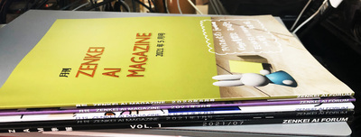
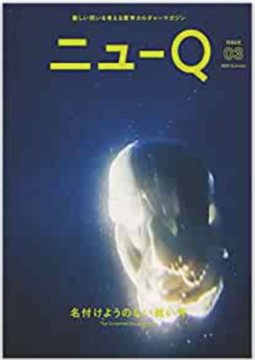

ZAF ２０２１年８月
今回の内容
特にテーマはありません
- 前座 [6:30 - 7:00]
- 第１部 [7:00 - 8:00]
新企画：本を読んでみよう- 第１回：『状況に埋め込まれた学習』
- 第２部 [8:00 - 9:00]
最近の話題から - 2021年夏 - 今日のおわりに
雑誌と本とホームページ
8月も終わりました。
8月といえば、大人も子供も夏休みですね。
夏休みの宿題はできましたか？
いちきの宿題の中から３つほど、つまり
- 雑誌
- 本
- ホームページ
雑誌
7月にサークルで技術書典に出した雑誌『ZAM 季報 VOL.1』について
その１：巷の大手電子書店にも出品してみました！
お金の話
ロイヤリティ、いわゆる印税、著者の取り分
| 書店（サイト） | ロイヤリティ |
|---|---|
| 技術書典 | 80% |
| Amazon Kindle | 35% （独占販売で 70%） |
| Apple Books | 70% |
| 楽天Kobo | 70% |
| BOOTH （参考） | 94.4% - 22円 （※） |
（※）BOOTH のサービス利用料は
(商品価格+送料)×5.6％+22円となってます。(cf. booth.pm/consignment_sale)
その２：印刷しました！
- 性懲りもなく、またまた、ZAM を印刷に回しました
- 『ZAM 季報 VOL.1』
つまり月刊 ZAM の本文は省いて、各号表紙のみとして、
結果６６ページで、フルカラー印刷しました！ - 合わせて
（『ZAM 季報 VOL.1』編集前に既に仕上がっていた）
『月刊 ZAM ５月号』 - それが先週、届きました！
月刊 ZAM ５月号

|
 |


ZAM 季報 VOL.1 （書き下ろしパート抜刷版）

雑誌というメディア
- 流行には疎いのですが、
ここにきて DIY 的なノリで雑誌を作る ZINE ってのが世間的には流行ってるようです- 生態系としては、
- アート、文学系： ZINE
- 漫画系：同人誌
- 技術系：技術同人誌
- 歴史的に古くからあるものだと
- 社会系
- アングラ、カルト系
- 上の ZINE は、歴史的にはこれらの系譜かなとも思いますが、
多分、歴史的には（良い意味で切れた）太陽の下で前を向いた雰囲気かなと、
（期待半分で）感じてます
- 生態系としては、
- 日本の世の中で、自分の考えを世に問いたい場合、
街頭に立って演説するよりも、
自分の考えを「雑誌」にして公表するというアプローチもあるんだな、と
今、世の中に出ている「雑誌」を調査していて思った- そんなこと、当たり前じゃないか、ということですが
- でも「理解」というものって、そういうことですよね
雑誌というメディア
勝手に雑誌紹介
- 若林恵編集長時代の WIRED
VOL.21 音楽の学校 VOL.23 いい会社 VOL.24 新しい都市 - BRUTUS
- 広告 Vol. 415 特集：流通
- 博報堂という（その道の）大手が出してる（再開した？） 実験的な雑誌
- SPECTATOR Vol. 48 パソコンとヒッピー
- Amazon でお勧めされて、
出版元のネットショップで注文 - 発売が幻冬舎、というのがピンとこない（仕組みが）
- ちなみに、この雑誌の取扱書店のリストから、 今回問い合わせて置いてもらえることになった 「石引パブリック」を見つけた
- Amazon でお勧めされて、
- ニューＱ ISSUE 3 名付けようのない戦い号
- 最近 Amazon で雑誌をあれこれみててサジェストされていた
- でも、実際に買った理由は、ツイッターで岸野雄一さん自身が言及してた 『民主主義のエクササイズ』を読みたくて
- パラパラみたら、（哲学という文脈で）
研究者の人に自分の論文を解説してもらう、という企画が実践されていた
- 個人的には、サイエンスの文脈でそういう活動をしないから、 日本社会がおかしな基準で（非科学的なロジックで）進んでしまってるのかな、 とおもったりしてた
みなさんも ZAM 編集部に、原稿送ってください！
本
- 上に書いた通り『ZAM 季報 VOL.1』で電子書籍の世界は完全制覇しました！
- 次の目標は「リアル書店」ですね
- （おもしろい本ないかなぁ〜
と思いながら
棚にある本や雑誌を手に取って
パラパラとめくって
お、おもしろそ〜と思う感覚
いいですよね）
- （おもしろい本ないかなぁ〜
- ということで、ぼくの２０２１年の夏休みプロジェクトとして
街の本屋さんに、ぼくの本を置いてもらおうプロジェクト！
ちょっと、背景
「出版業界」というものについての最近の話題
お金の話
- 出版流通で“中抜き”を実現、京都にある「街の小さな書店」の挑戦 (横田増生：ジャーナリスト 2019.11.1 5:10)

- 出版流通の仕組みは、出版社（版元）を起点に、
出版物が取次（卸）に流れ、書店に届く。
3者の取り分は、- 出版社70％、
- 取次8％、
- 書店22％ ――が一般的だと言われる。
- 1500円の単行本を1冊売れば、
- 出版社には1050円が入り、
- 取次は120円を取り、
- 書店には330円が入る。
- 出版流通の仕組みは、出版社（版元）を起点に、
出版物が取次（卸）に流れ、書店に届く。
印税の話
作家の取り分
- mochikoAsTech さんの『技術同人誌を書いたあなたへ』
- 引用 (p.26)
そして技術書の商業出版の場合、印税は紙の本なら 5% 〜 15% 程度、
電子書籍でも 5% 〜 30% 程度です。
- ここから得られる１つの結論は、
「自分で出版までやればよい」 ってこと
１つの視点：成熟した市場
- 最近みたツイートから見かけたネットの記事
『本棚にある本の出版社をめぐる』

- 「出版社」（と、そこに働くたくさんのサラリーマンの人たち）を
養（やしな）うためのコストが、大きそうだなと思った
- その費用は、それ以外のところから持ってくるんだろうな、と
- それは多分、弱いところから、
つまり、作家の印税とか、書店の取り分とか、からかな
- 音楽業界（何も知らないですが）でも、
「おれらはロックだ」と言ってるバンドが、
おれたちはレコード会社（のスーツ着た人たち）のために音楽やってるんじゃない、
と叫んだりする構図と一緒なのかな
別の視点：スケーラビリティ
- 街の本屋さんがなくなっていく
（全国チェーン店が幅を利かせて、という話は、本屋についてはすっとばして）
Amazon に食われていく
| 街の本屋さん | Amazon （など大手） | |
| ←→ |
- 素朴に思うこと：
文化にこそ多様性とか地域性とかが大事だよな
（当然、そのために余分なコストはかかるけれど）
多様性と同人誌
- 「多様性」って、 ある意味で「アンチ・マーケティング」でもあるな、と
- 「同人誌」と「商業誌」の対比を通して感じることでもあるけれど
- （両方あってよいと思う - それも１つの「多様性」ですよね）
- つまり
同人誌は と思ってる
市場性など頓着せず
振り切った方が価値が上がる
個人を解放する技術って、どうなったのか？
- パソコンは、パーソナルコンピュータで、個人を解放するツールだったよね
- DTM - デスクトップミュージック
- DTP - デスクトップパブリッシング
『技術書典』に参加して１年たって思ったこと
- スケールしなくても達成される（小さな）成功で構築された世界
- 大きな出版社はいらない
- マーケティングもしなくていい
- 田舎道で、畑の横にある「農産物直販」ブースのノリで、いいじゃないか
- （正しい意味での）中抜きして
つまり、中間マージン（モノを右から左に渡すだけの人たち）をカットして
作り手（農家、作家）と、売り手（お店、書店）がきちんと評価される（収入を得る） しくみ
そんなこんなで、
お店探し
で、大手の流通システムからは一線を画した、
いわゆる「街の本屋さん」（品揃えにこだわった、みたいな）
を探しました
（個人出版も受け入れてくれそうなところ、という意味もある）
- ネットでググって、その道で有名そうなお店に問い合わせてみた
- ……返事なし
- そういう「街の本屋さん」って、社会問題系とか、アート系とか、そっち寄りな雰囲気
- いわゆる理系的な（ハード・サイエンスとかいう言葉って、ないかな？） 「街の本屋さん」って（古本屋さん以外では）ないのかな？
- そんな中、雑誌『SPECTATOR』
SPECTATOR Vol. 48 パソコンとヒッピー の巻末にある「販売店」のリストの中に 金沢のお店を発見！
- ググって、メールしてみたら……
- 返事きました！
石引パブリックさん
石引商店街にある本と印刷とカフェのお店です。
〒920-0935 石川県金沢市石引2丁目8-2 山下ビル1F
営業時間 13:00〜19:00 定休日 毎週日曜・月曜
駐車場 お店裏通りに1台有り
実際の本棚
金沢経済新聞 2016年8月30日の記事から
金沢にアート・カルチャー系書店＆カフェ「石引パブリック」 リソグラフ印刷も

フォトフラッシュ： 金沢にアート系書店・カフェ
ホームページ
- ZENKEI AI FORUM はこの7月で
３周年を迎えました！ （パチパチ） - オンラインフォーラム、ユーチューブ・チャンネル、ポッドキャストに
雑誌まで作ってますが、
ホームページ（まともなもの）がありませんでした - これが３つ目のぼくの夏休みの宿題（みたいなもの）
- まだ不完全ですが、まずは叩き台、できました

- オンラインフォーラムのスレッド
ZENKEI AI FORUM のホームページ

- GitHub の ZENKEI AI FORUM アカウントで GitHub Pages を使って作りました
- GitHub Pages についての詳しい説明は、
オンラインフォーラムの古川さんの
『AI日記：2021/08』の
■8/11のトピック：GithubでWebPageを作るを参照してください

- ページ自体は（結局）HTML 直書きです
- ソースも丸見えですので、修正をプッシュしてプルリクしてください！
- スタイルは、有名な HTML5UP

の Forty を使ってみました（そのまんまですが）

- GitHub Pages についての詳しい説明は、
オンラインフォーラムの古川さんの
『AI日記：2021/08』の

新企画：本を読んでみよう
なんで ZAM をやっているのか？
- 月刊 ZAM ２月号の第４章『月刊 ZENKEI AI MAGAZINE』創刊より
(https://hello-ai-forum.github.io/ZAM202102/)


- 抜き出すと：
- ZAF は（地域）コミュニティを目指している。
- コミュニティとは「主体的な人」の集まりであり、 それはつまり「秘密結社」だ（瀧本哲史）
- （秘密）結社は同人であり、 同人といえば同人誌である
- 人は、たのしそうなイベントに集まる
- 思考やアイデアは、 おもしろそうな雑誌のまわりに集まる
- 「たのしそうなイベント」が ZAF である
- 「おもしろそうな雑誌」が ZAM である！


これからの『ZAM』について
- これまでどおり『月刊 ZAM』を、粛々と
- 書き下ろしコンテンツの、連載化を、是非！
- 「単行本」を目指しましょう！
- 次の『ZAM 季報』に向けて、新しい執筆者を第募集！！
- イメージとしては、
- ハードルの低い（＝はじめやすい）参画の場として
- 各人の学びのアウトプットの場として
- アイデアとアイデアの交流の場として
- 人と人の集まりの場として
- 参考文献：
瀧本哲史
『君たちの友だちはいらない』レイヴ、ウェンガー
『状況に埋め込まれた学習』David Parkins
"Making Learning Whole"読書猿
『独学大全』


正統的周辺参加、してみよう！
ZENKEI AI FORUM を「正統的周辺参加」の場にしたい
- 「正統的周辺参加」とは
Legitimate Peripheral Participation (LPP)
なので、ちょっと解説
ぼくの感じる「正統的周辺参加」の例
- jeremy howard の fast.ai
-
David Parkins
"Making Learning Whole"
-
David Parkins
- 瀧本哲史の「秘密結社」
- derek sivers の３分のビデオ "How To Start A Movement"
- www.ted.com/talks/derek_sivers_how_to_start_a_movement
(youtu.be/qzbLta1kZio) - はだか踊り男 (shirtless dancing guy - leader) と、 first follower
- leader が followers を対等に扱うこと、透明性
（正統的周辺参加）
- www.ted.com/talks/derek_sivers_how_to_start_a_movement
- 松岡正剛の千夜千冊と、彼の実践
- おそらく、自分自身の大学〜大学院〜研究者生活
- 研究者稼業というのは、 現代に残っている「徒弟制度」の１つの典型パターン
- 研究者集団という共同体へのコミットメントの側面もある
- いわゆる「教育」（学校システムによるマス教育）との対比
- 独学と、実践的学習の関係
- 『音楽と数理』「あとがき」より
この本の「表テーマ」は、 サークルであり、コミュニティであり、仲間であり、 一人でできないことを実現する有志だと 勝手に思ってます。長い間、ぼくは良い意味でも悪い意味でも、 人生ではソロ活動を優先してきたように思います。 でも最近、一人ではできないこともあるし、 仲間がいてできることの重要性を（今更ながら）感じています。 ZENKEI AI FORUM を（秘密ではない）秘密結社にしようと、結構まじめに思っています。
あと、この本の「裏テーマ」として、 これは書き始めて、また書いている間に湧いてきた視点ですが、 アマチュア精神こそが自由な発想を生み出す鍵になることを認識（確認）できました。
アマチュア最高。独学最高。これからは、これ推しでいきます。 -
読書猿
『独学大全』
- えっと、言いたいことは、
『独学大全』より『音楽と数理』の方が先よ ということ（どーでもいーことですが）
- 『音楽と数理』「あとがき」より
ということで、まとめ
AI について（ぼくらが）楽しそうに喋っている、実践していることが、
そういう場の形成になればいいなぁ、
それとあわせて
最近の話題から - 2021年夏
いちきの『最近の話題から』振り返り
（困ったときの「最近の話題から」）
- ZAF 2021年6月 GPT-3 で遊んでみた！
- ZAF 2021年２月 画像分類でSOTA更新した NFNets
- ZAF 2020年11月 画像分類の新手法 ViT と BYOL
- ZAF 2020年7月 GPT-3 と StyleGAN2
- ZAF 2020年1月 2020年版 最近の話題から
- ZAF 2019年9月 最近の話題から
ということで、２０２１年夏編です！
rinnaが日本語GPT-2モデルをオープンソース化
- 引用：
AIチャットボット「りんな」などを手がけるrinna（リンナ）は4月7日、
日本語に特化したGPT-2の大規模言語モデルを構築し、
GitHubおよびNLPモデルライブラリー「HuggingFace」において、
トレーニングコードと言語モデルをオープンソースソフトウェアとして公開した。 - HuggingFace: rinna/japanese-gpt2-medium
- GitHub: rinnakk/japanese-pretrained-models
HuggingFace / Transformers
NLP の新アーキテクチャ Transformer の 最新モデルが提供されている
ライブラリ HuggingFace の Transformers に 入門してみよう！
- NLP （あと一部画像処理）する Transformer ベースのモデルのライブラリ
- PyTorch, TensorFlow などの Deep Learning frameworks をサポート
- 扱えるタスク
- Sequence Classification （分類） (sentiment analysis)
- Extractive Question Answering （Q&A）
- Language Modeling
- Masked LM （穴埋め問題）
- Causal LM （テキスト生成）
- Named Entity Recognition （固有表現抽出、人名、地名、日付とか）
- Summarization （要約）
- Translation （翻訳）
- 含まれるモデル
- モデルは大きく分けて以下のタイプに分けられる
- Encoders : テキストを読み込んで features を計算する、双方向 (BERT, cf. Masked LM, Sentiment Analysis)
- Decoders : テキストを読み込んで出力を計算する、１方向 (GPT, cf. Caucal LM, text generation)
- Seq2Seq : (T5, cf. 翻訳、要約)
- その他
- （普通の Deep Learning の形式とは変わってる、 Transformer 固有の、という感じかな）
- Transformer オリジナル論文：
Attention is All You Need (arxiv:1706.03762)


- モデルは大きく分けて以下のタイプに分けられる


日本語で Transformer を使う！
rinna のニュースをみて
日本語を本格的に扱えるタイミングが来た！
日本語の学習済みモデル

- tokenizer には主に２つのタイプがある
- MeCab ベース(BertTokenizerJapanese)
- SentencePiece ベース(日本語の vocab を含む)
- モデル一覧

- cl-tohoku
- cl-tohoku/bert-base-japanese-v2
東北大乾研究室さんが公開している Bert のモデルです。 large モデルを含め、いくつかの派生モデルが公開されています。 トークナイザは BertJapaneseTokenizer で、トークナイズには MeCab を利用しています。 コーパスは Wikipedia 日本語版を利用しているようです。
- cl-tohoku/bert-base-japanese-v2
- rinna/japanese-gpt2-medium
rinna 株式会社さんが公開している GPT2 のモデルです。 rinna 株式会社はマイクロソフトの AI「りんな」をつくっていたところが独立して法人化したところのようです。 トークナイザは SentencePiece の T5Tokenizer を利用していて、語彙は日本語のみとなっています。 AutoTokenizer からは利用できず T5Tokenizer を明示する必要があるので注意が必要です。 コーパスは CC-100 日本語版を利用しているようです。

{kind=link}
{kind=link}
{kind=link}
{kind=link}
{kind=link}
{kind=link}
{kind=link}
{kind=link}
{kind=link}
{kind=link}
{kind=link}
{kind=link}
{kind=link}
{kind=link}
{kind=link}
{kind=link}
{kind=link}
{kind=link}
{kind=link}
{kind=link}
{kind=link}
{kind=link}
{kind=link}
{kind=link}
{kind=link}
{kind=link}
HuggingFace Transformer デモ
ノートブック

今日のおわりに
……
今後の予定
- 次回 ZAF ９月２９日開催の予定です。
- ZAF 講演者、 ZAM 執筆者、絶賛、大募集中です！
お気軽にお問い合わせください！